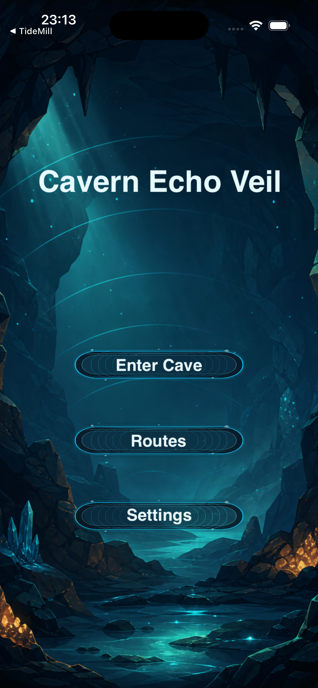
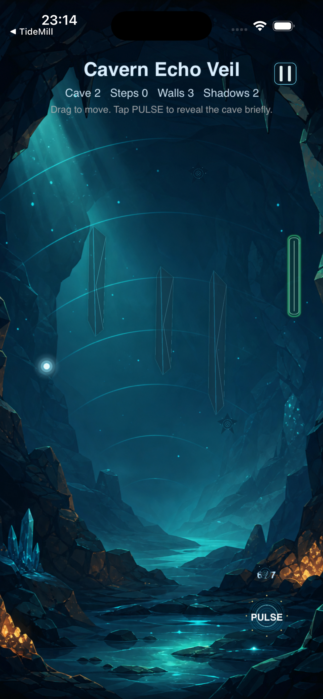
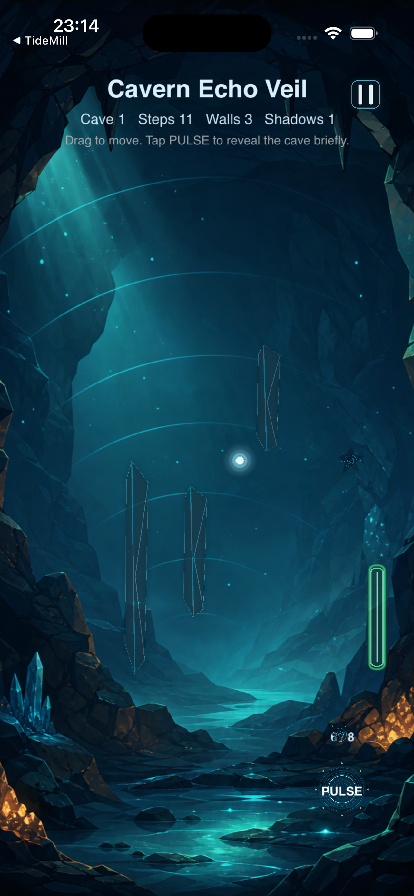
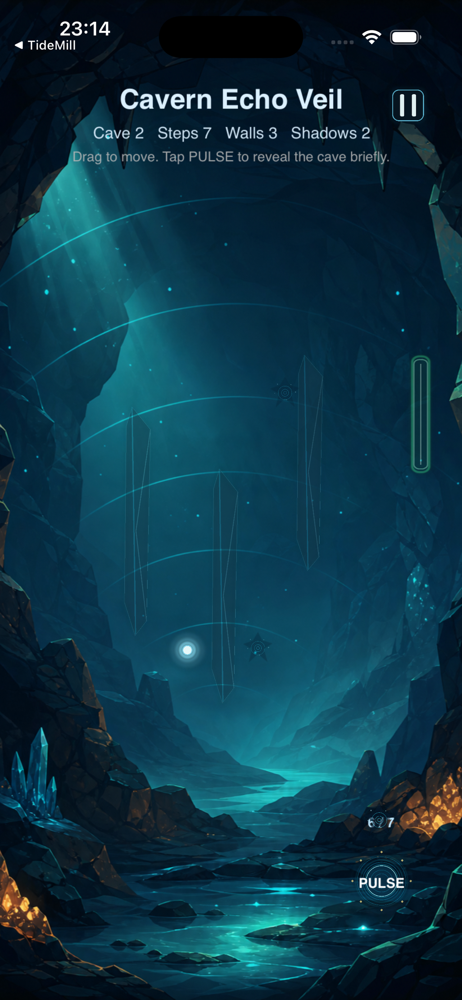
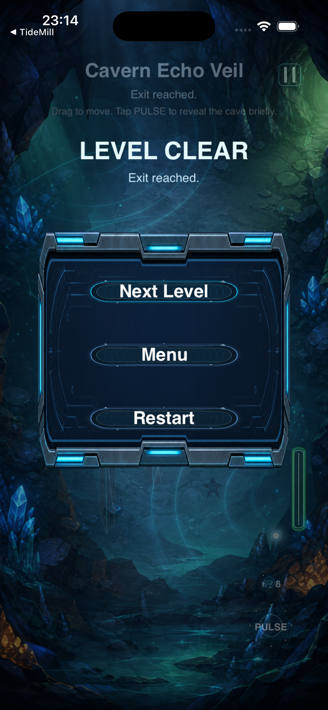

Main Menu
Echo Path title screen with Play, Level Select, and Settings buttons.
Drag through the dark. Fire sonar pulses to reveal walls and shadows. Find the exit before they find you.
Echo Path is a single-player sonar exploration puzzle with 50 progressive cave levels. You control a glowing light point navigating pitch-black caverns, firing limited sonar pulses to briefly illuminate walls, shadow creatures, and the exit. Manage your pulses, dodge patrolling shadows, and reach the cave exit.

Echo Path title screen with Play, Level Select, and Settings buttons.

A sonar pulse briefly illuminates walls, shadow creatures, and the exit for about 1.4 seconds.

Drag to move your light point through the cave. Only your glow is visible until you pulse.

Shadow creatures patrol the cave and chase you when close. A single touch ends the run.

Reach the exit portal to clear the cave and unlock the next level.
Echo Path is a sonar exploration puzzle set in pitch-black caves. You control a small glowing light point and must reach the exit on the right side of each cavern. The catch: walls and shadow creatures are invisible in the dark. Your only tool is a sonar pulse that briefly reveals everything around you.
Each of the 50 levels adds more walls, more shadow creatures, and fewer pulses. You must balance risk and information — every pulse is precious. Drag carefully through the dark, bump a wall to reveal it locally, or spend a pulse to map the whole cave. Shadow creatures patrol randomly until you enter their aggro radius, then they chase you down.
With no ads, no accounts, no analytics, and no internet required, Echo Path is a pure offline puzzle experience. Progress is saved locally on your device, so you can pick up exactly where you left off.
Touch and drag anywhere on screen to steer your light point. Movement follows your finger smoothly at a fixed speed.
Tap the PULSE button to fire a sonar pulse that illuminates walls, shadows, and the exit for about 1.4 seconds.
Shadow creatures patrol the cave and switch to chase mode when you enter their 90px aggro radius. One touch and the level fails.
Reach the glowing exit portal on the right side of the cave to clear the level and unlock the next one.
Each level gives you a limited number of pulses (3 to 8), decreasing as levels progress. Use them wisely.
If you bump into a wall, that wall briefly lights up so you can map your surroundings without spending a pulse.
Drag to move your light point. Tap PULSE to reveal the cave briefly. Avoid shadow creatures and reach the exit on the right.
No. Echo Path is fully offline with no ads, no accounts, no analytics, and no in-app purchases.
Visit the support page or contact support through the Echo Path App Store product page.